verwünschen

hallo mitenand
Through the water,"This fog is so thick, you can't see anything." Sakura whispered."It would seem so." Naruto said coldly while looking ahead of the boat from his spot between Sebastian and Kakashi."The bridge isn't far now, our destination is just up ahead." The rower said."Mr. Tazuna, before we reach the peak I want to ask you something. The men that are after you, I want to know why?" Kakashi said, "If you don't tell us, I'm afraid that we have to end our mission when we're brought to ashore." he warned."Gato?" Kakashi questioned. "He's a business leader, everyone knows him.""Really? Tell me more about this Gato person." Naruto said a bit interested."Gato Transport is a confectionery (i.e. candy) toy manufacturing company which is owned by Gato himself. It is a growing enterprise and it is strongly supported by thewealthy and Bourgeoisie. However he is secretly a drug dealer who uses Ninjas to take over countries. Anyone that tries to get in his way gets killed by the Ninjas that he controls, he controls the seas so he control the Island. I'm building a bridge so the Island occupants can escape so we can be free from him." Tazuna said seriously."I heard that before Gato was the owner of the company, the previous owner was the Mizukage's 'Pet'. Also known as the 'Mizukage's Dog'." Kakashi said quietly."Really? What does that mean?" Naruto said getting interested from the information he was hearing."That means when something happens that the Mizukage doesn't like and there is no one that would or could finish the job he/she would order there 'pet' to do the job. After the previous owner was murdered by someone unknown, Gato some how took over the business changing the name. When the Mizukage heard about the news he cut ties with the company and decided not to find another 'Pet'.""Interesting" Naruto said quietly in thought right before the boat was brought got out of the boat and began to travel to Tazuna's place after greeting goodbye to the person that helped them cross through the water.As they continued walking through the woods Naruto continued thinking about the information he had heard.'Supposedly if I were to own a company I could be the Hokage's 'Pet' and do multiple missions that's worthy for my abilities.' He thought along with other things that he could gain.As he continued thinking his track of mind of interrupted when Sebastian pulled out a silver kitchen knife quickly from where eve that looks a lot like the ones in the Mansion and threw it towards a random bush."What are you doing?" Naruto said to Sebastian."I apologize. However I don't like being spied on, unless it was I who does the spying." Sebastian smiled at Naruto, as his brownish-red eyes shined a bright red at saying the last part. Naruto blushed when understanding the double meaning.All of them went to the bush where Sebastian threw his kitchen knife. When they pushed the bushes aside to see what was behind them, they saw a frightened white rabbit.Naruto stared at the bunny for a few seconds and after thinking carefully he found out an answer."Substitution Jutsu" Naruto said quietly, as Sakura hugged the bunny as an apology."Get down!" Kakashi called out as he pushed Tazuna, Sakura, and Sasuke down, while Sebastian pushed Naruto down.Naruto was about to protest the moment his body made contact with the ground he saw a large sword swing past them where their heads were and hit a tree branch.They then saw a man appear on the sword with ease."Who is he?" Naruto questioned, to no one in specific."That is Zabuza Momochi, he is also known as 'Demon of the hidden Mist'." Sebastian informed all that doesn't know."Demon?" Sakura nervously said.Zabuza laughed evilly before speaking. "It's an honor to in the presence of Kakashi Hatake of the Sharingan, but you'll have to hand over the old man.""Everyone stand behind me and watch Tazuna!" Kakashi commanded."Sebastian go help him." Naruto ordered quietly as he quickly stood in front of Tazuna with Sasuke and Sakura stood next to him, protecting the rest if possible."Yes, my lord." Sebastian said equally quiet.He then pulled out hus special secret weapons.Sharp silverware.Zabuza laughed when he saw what's in Sebastian's hand. "You think you can hurt me with silverware?!" Zabuza laughs again. "Don't make me laugh!"Sebastian gave him a fake smile as he tried his best not to smirk. "Don't worry, I promise you that I won't disappoint you."Just then Sebastian jumped high up in the are as he threw a few silverware at Zabuza, who quickly jumped away with an astonished look behind his mask.Naruto and Sebastian smirked at seeing everyone's astonished expressions."You should be careful. You don't know who you could trust." Naruto said in an intelligent tone.Before Zabuza could say anything a few more silverware came flying towards him, a couple shredding his clothes as one of them scrap his cheek."Who are you?" Zabuza asked as he continues to dodge more silverware."I am just one hell of a ninja." He said.Naruto's eyebrow twitched at the sentence."Zabuza, tell me how much were you told Gato would give you?" Naruto questioned."Why? It won't matter since you'll die soon." Zabuza said before the silverware starts to increasing in the amount."Just tell me.""$1,000" Zabuza said."Really? It don't sound right. Gato is supposed to be a greedy civilian, seeing as he tries to rob people and such." Naruto said with a smirk on his face when Zabuza stopped moving, same goes for Sebastian, but still on high alert if Zabuza were to attack."Go on." Zabuza said."When you think about it, after you finish the job he could toss you away like trash without payment. That would be a waste of such a promising individual." Naruto praised."What are you saying?""We will talk in private later, that is if you will quit this mission and assist us in our mission." Naruto said looking at the rogue ninja.After a moment of thinking Zabuza slowly let his guard down and took a couple of steps forward to Naruto."You got yourself a deal kid." He took out a hand for Naruto to shake."Good" The said blonde who shook Zabuza's hand.Everyone, except for Naruto, Sebastian and Zabuza, had a surprised look. 'What had just happened?' They all thought at the same time.
dear
people
of
this
earth
I
welcome
you
to
my
page
and
I
hope
you
don't
die
from
covid
< 3
 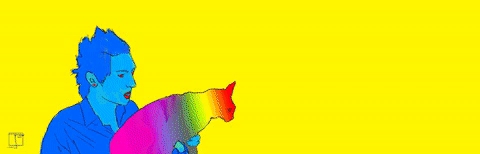
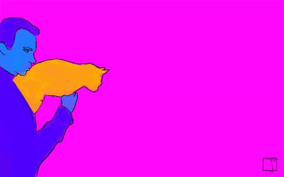
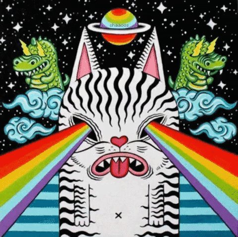
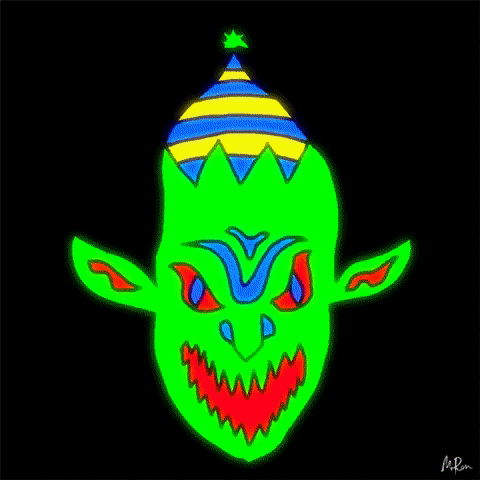
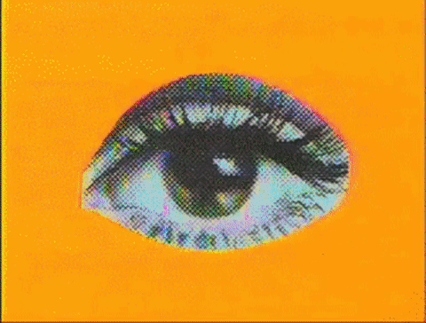
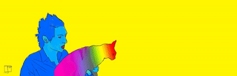
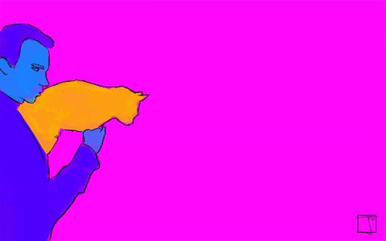
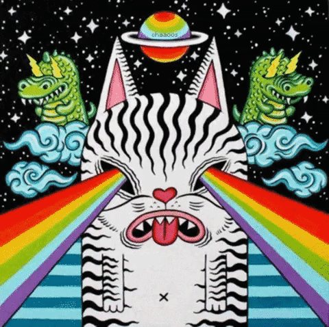
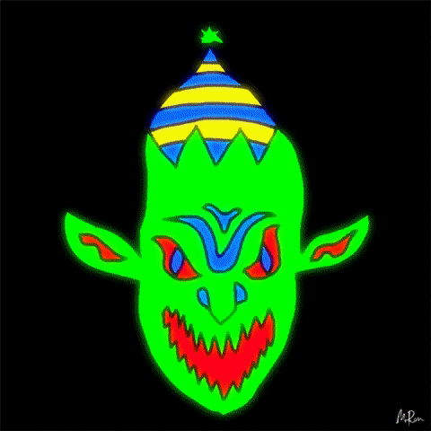
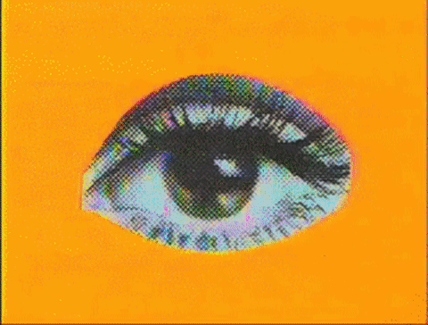

 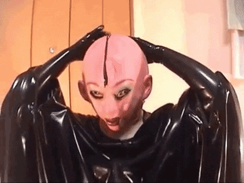
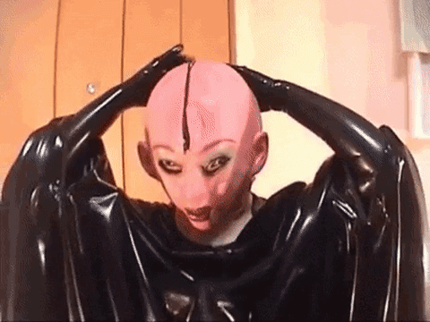